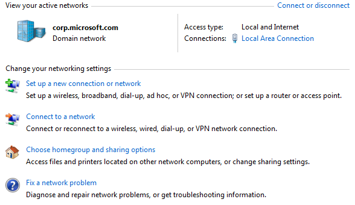
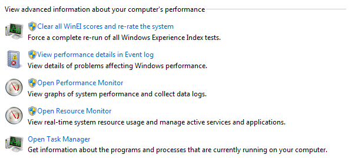
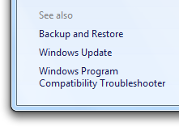
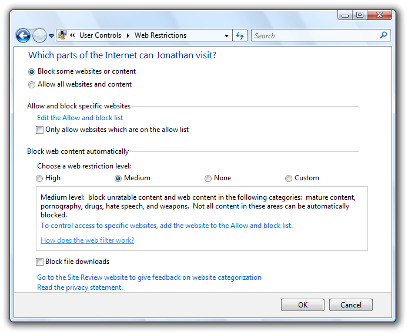

[!NOTE] This design guide was created for Windows 7 and has not been updated for newer versions of Windows. Much of the guidance still applies in principle, but the presentation and examples do not reflect our current design guidance.
Use control panel items to help users configure system-level features and perform related tasks. Programs that have a user interface should be configured directly from their UI instead.
With Control Panel in Microsoft Windows, users can configure system-level features and perform related tasks. Examples of system-level feature configuration include hardware and software setup and configuration, security, system maintenance, and user account management.
The term Control Panel refers to the entire Windows Control Panel feature. Individual control panels are referred to as control panel items. A control panel item is considered top-level when it is directly accessible from the control panel home page or a category page.
A typical control panel item.
The control panel home page is the main entry point for all control panel items. It lists the items by their category, along with the most common tasks. It is displayed when users click Control Panel in the Start menu.
A control panel category page lists the items within a single category, along with the most common tasks. It is displayed when users click a category name on the home page.
Control panel items are implemented using task flows or property sheets. For Windows Vista and later, task flows are the preferred user interface (UI).
Developers: To learn how to create control panel items, see Control Panel Items.
Note: Guidelines related to property sheets are presented in a separate article.
To decide, consider these questions:
Is the purpose to configure system-level features? If not, use another integration point. Make your application features configurable directly from the UI using options dialog boxes, instead of using Control Panel. For utilities that aren't used for setup, configuration, or related tasks (like troubleshooting), use the Start menu as the integration point.
Does the system-level feature have its own UI? If so, that UI is where users should go to make changes. For example, a system backup utility should be configured from its program options instead of from Control Panel.
Will users need to change the configuration often? If so (say, several times a week), consider alternative solutions, perhaps in addition to using Control Panel. For example, the Windows master volume setting can be configured directly from its icon in the notification area. Some settings can be configured automatically. In Windows Explorer, for example, the Compatibility tab for application properties allows an application to be run in 256 color mode instead of requiring users to change the video mode manually.
Are the target users IT professionals? If so, use a Microsoft Management Console (MMC) snap-in instead, which is designed specifically for system management tasks. In some cases, the best solution is to have both a control panel item for general users and an MMC snap-in for IT professionals.

In this example, the Local Users and Groups MMC snap-in provides user management targeted at IT professionals. Other users are more likely to use the User Accounts item in Control Panel.
Is the feature an OEM feature used only during initial system configuration? If so, use the Windows Welcome Center as the integration point.
Control panel items are necessary because many system-level features don't have a more obvious or direct integration point. Yet Control Panel shouldn't be viewed as the "one place" for all configuration settings. Programs that have a user interface should be configured directly from their UI instead of using control panel items.
Incorrect:

In this example, Windows Internet Explorer shouldn't be represented in Control Panel, because its own UI is a better integration point.
To decide, consider these questions:
The Control Panel concept is based on a real-world metaphor. A real-world control panel is a collection of controls (knobs, switches, gauges, and displays) used to monitor and control a device. Users of such control panels often need training to understand how to use them.
Unlike their real-world counterparts, Windows control panel designs are optimized for first-time users. Users don't perform most control panel tasks very often, so they usually don't remember how to do them and effectively have to relearn them every time.
To design a control panel item that is useful and easy to use:
When designing and evaluating items to include in Control Panel, determine the common tasks that users perform and make sure there is a clear path to perform those tasks. Users typically perform the following types of tasks with control panel items:
If you do only one thing...
Design control panel pages for specific tasks, and present them in terms of user goals instead of technology.
For control panel items, you can use a task flow or a property sheet. Here are their usage patterns:
Task flow items use a hub page to present the high-level choices, and spoke pages to perform the actual configuration.
Hub pages
Spoke pages
General
Task links and buttons
When a page has a small set of fixed options, use task links instead of a combination of radio buttons and a Next button. This allows users to select a response with a single click.
You can put task links and buttons in the following places (in order of discoverability):
Base the location of task links and buttons on importance and need for discoverability.
For task links presented in the content area:
Present task links and buttons in a logical order. List task links vertically, command buttons horizontally.
Within categories, divide the commands into related groups. Present the task groups by placing the most commonly used first, and within each group, place the most commonly used tasks first. The resulting order should roughly follow the likelihood of use, but also have a logical flow.
If there are many task links, give the most important tasks a more prominent appearance by using a 24x24 pixel icon and two lines of text. For less important tasks, use a 16x16 pixel icon, or no icon, and a single line of link text.

In this example, important commands are given a more prominent appearance.
Have clear physical separation between frequently used commands and destructive commands. Otherwise, users might click destructive commands accidentally. You may need to reorder your commands somewhat to put destructive commands together.
Provide the mechanism to undo commands directly on the page. Users shouldn't have to navigate somewhere else to undo a mistake.
For task links, use either all default task link icons or all custom icons. Don't mix them. Consider using custom icons only if:
Dialog boxes
When using task flows, you generally want a task to flow from page to page within a single window, but the following circumstances are exceptions. Use dialog boxes in the following circumstances:
To prompt users for an administrator user name and password. Always use the credential manager dialog box for this purpose. (Should be modal.)
To confirm an in-place command using a task dialog or message box. (Should be modal.)
To get input for in-place commands, such as for New, Add, Save As, Rename, and Print commands.
In this example, the Delete command is performed in a dialog box instead of a separate page.
To perform secondary, stand-alone tasks. Using a modeless, secondary window allows such tasks to be performed independently and outside the main task flow.
General
Object lists
For more guidelines about presenting object lists, see List Views.
Interaction
Don't put commit buttons on hub pages. Hub pages are fundamentally launch points. Users never "commit" hub pages they are never done with them. And commit buttons on hub pages make any tasks initiated from a hub confusing (users will wonder if those tasks need to be committed).
Consider putting the most useful properties directly on hub pages. Such hybrid hub pages are strongly recommended when users are most likely to use Control Panel to access those properties.

In this example, the Power Options control panel item has the most useful settings directly on the hub page.
Use an immediate commit model for any settings on hybrid hub pages so that changes are made immediately. Again, users never commit a hub page. If a setting requires a commit button, don't put it on a hub page.
Consider putting simple, "one-step" commands directly on hub pages instead of using navigation links.
Confirm in-place commands whose effects cannot be easily undone. Use a task dialog or message box.
In this example, the Delete command is confirmed with a dialog box.
For task-based hub pages, identify each task with a task link and an icon. You can also provide an optional description for each link. However, try to make the task links self-explanatory and provide optional descriptions only to links that really need them.

In this example, each task has a task link and an icon.
For object-based hub pages, single-clicking selects objects, and double-clicking selects an object and navigates to its default page. The default page is typically a property page or a task-based hub page.
An object-based hub page may navigate to a task-based hub for the selected objects. However, such secondary hubs should be avoided because they make a control panel item feel too indirect.
Task panes
Use task panes to present links to commands, views, and related control panel items.
See also links
Provide See also links in the task pane to help users find related control panel items, or the right control panel item if they have the wrong one. Link to items users are likely to associate with your control panel item.

In this example, the Action Center control panel item links to related control panel items.
Link to a specific task page if that is what users are more likely to recognize. Otherwise, link to the entire control panel item. Use the control panel name without adding the phrase, control panel.
General
Interaction
Doing so keeps the meaning of the commit buttons for the main task clear and unambiguous. Users should always be confident in understanding what they are committing to.
Interaction (intermediate spoke pages)
Interaction (final spoke pages)
Commit buttons
Note: Cancel buttons are considered to be commit buttons.
Confirm tasks using commit buttons that are specific responses to the main instruction, instead of generic labels such as OK. The labels on commit buttons should make sense on their own. Avoid using OK because it isn't a specific response to the main instruction, and therefore easier to misunderstand. Furthermore, OK is typically used with modal dialog boxes and incorrectly implies closing the control panel item window.
Use OK for pages that don't have settings.
Use OK when the specific response is still generic, such as Save, Select, or Choose, as when changing a specific setting or a collection of settings.
Use OK if the page has radio buttons that are responses to the main instruction. To maintain the delayed commit model, you can't use task links on a final spoke page.

In this example, the radio buttons, not the commit buttons, are responses to the main instruction.
Provide a Cancel button to let users explicitly abandon changes. While users can implicitly abandon a task by not confirming their changes, providing a Cancel button allows them to do so with greater confidence.
Don't use Close, Done, or Finish commit buttons. These buttons are typically used with modal dialog boxes and incorrectly imply closing the control panel item window. Users can close the window using the Close button on the title bar. Also, Done and Finish are misleading because users are returned to the page where the task was launched from, so they aren't really done.
Don't disable commit buttons. Otherwise users have to deduce why the commit buttons are disabled. It's better to leave commit buttons enabled, and give a helpful error message whenever there is a problem.
Make sure the commit buttons appear on the page without scrolling. If the page is long, you can make commit buttons always visible by placing them in a command area, instead of in the content area.
In this example, content area size is unbounded, so the commit buttons are placed in the command area.
Right-align the commit buttons and use this order (from left to right): positive commit buttons, Cancel, and Apply.
Preview buttons
Live previews
A control panel item has live preview when the effect of changes on a spoke page can be seen immediately.
Consider using live preview for display settings when:
The effect is obvious, typically because it applies to the entire monitor.
The effect can be applied without significant delay.
The effect is safe and can be undone easily.

In this example, the effect of the Windows Color and Appearance settings is seen immediately. Doing so allows users to make changes with minimal effort.
Use Save changes and Cancel for the commit buttons. "Save changes" keeps the current settings, whereas Cancel reverts to the original settings. "Save changes" is used instead of OK to make it clear that any previewed changes haven't been applied yet.
Don't provide an Apply button. The live preview makes Apply unnecessary.
Restore any changes if users navigate away using Back, Close, or the Address bar. To preserve changes, users must commit them explicitly.
Apply buttons
To integrate your control panel item with Windows, you can:
Register your control panel item (including its name, description, and icon), so that Windows is aware of it.
If your control panel item is top level (see below):
Provide search terms to help users find your task links using the Control Panel search feature.
Note that you can provide this information only for individual control panel items you can't add or change this information for existing control panel items that you extend.
Category pages
Add your control panel item to a category page only if:
Control panel items that meet these criteria are referred to as top level.
Don't add your control panel item to a category page if:
Removing such control panel items from the category pages makes the top-level items easier to find. Given their usage, these control panel items are sufficiently discoverable through search or contextual entry points.
Associate your top-level control panel item with the category under which users are most likely to look for it. This decision should be based on user testing.
Consider associating your top-level control panel item with the second most likely category as well. You should associate a control panel item with two categories if users are likely to look for its main tasks in more than one place.
Don't associate your control panel item with more than two categories. The value of the categorization is undermined if control panel items appear in several categories.
Task links
Search terms
Register search terms for your control panel item that users are most likely to use to describe it. These search terms should include:
These search terms should be based on user testing.
Also include common synonyms for these search terms. For example, monitor and display are synonyms, so both words should be included.
Include alternative spellings or word breaks. For example, users might search for either web site and website. Consider providing common misspellings as well.
Consider singular vs. plural noun forms. The control panel search feature doesn't automatically search for both forms; supply the forms for which users are likely to search.
Use simple present tense verbs. If you register connect as a search term, the search feature won't automatically look for connects, connecting, and connected.
Don't worry about case. The search feature is not case-sensitive.
Many settings require administrator privileges to change. If a process requires administrator privileges, Windows Vista and later requires Standard users and Protected administrators to elevate their privileges explicitly. Doing so helps prevent malicious code from running with administrator privileges.
For more information and examples, see User Account Control.
A scheme is a named collection of visual settings. A theme is a named collection of settings across the system. Examples of schemes and themes include Display, Mouse, Phone and Modem, Power Options, and Sound and Audio Options.
Allow users to create schemes when:
Schemes are useful when users are in a different environment, such as a different physical location (country/region, time zone); using their computer in a different situation (on batteries, docked/undocked); or using their computer for a different function (presentations, video playback).
Provide at least one default scheme. The default scheme should be well named and apply to most users in most circumstances. Users shouldn't have to create a scheme of their own.
Provide a preview or other mechanism so that users can see the settings within the scheme.

In this example, the Personalization control panel item shows a preview of the desktop and appearance settings.
Provide Save As and Delete commands. A rename command isn't necessary users can rename schemes by saving under the desired name and deleting the original scheme.
If the settings can't be applied without a scheme, don't allow users to delete all the schemes. Users shouldn't have to create a scheme of their own.
If the schemes are not completely independent (for example, power schemes depend upon the current laptop mode of operation), make sure there is an easy way to change settings that apply across all schemes. For example with power schemes, make sure that users can set what happens when a portable computer's lid is closed in a single location.
Choose a descriptive name that clearly communicates and differentiates what the control panel item does. Most names describe the Windows feature or object being configured, and are displayed in the Classic View of the control panel home page.
Don't include the words "Settings," "Options," "Properties," or "Configuration" in the name. This is implied, and leaving it off makes it easier for users to scan.
Incorrect:
Accessibility Options
Modem Settings
Power Options
Regional and Language Options
Correct:
Accessibility
Modem
Power
Regional Formats and Languages
In the correct examples, unnecessary words are removed.
If the control panel item configures related features, list only those features required to identify the item, and list the features the most likely to be recognized or used first.
Incorrect:
Folder Options
Phone and Modem Options
Correct:
Files and Folders
Modem
In the correct examples, the primary control panel item features are given emphasis.
Note: As with all Explorer windows, control panel page titles are displayed on the address bar, but not the title bar.
For hub pages, use the control panel item name.
For spoke pages, use a concise summary of the page's purpose. Use the page's main instruction if it is concise; otherwise use a concise restatement of the main instruction.
In this example, Power Options is used for the page title instead of the main instruction.
Use title-style capitalization.
The following guidelines apply to links to task pages, such as Category page task links and See also links.
Choose concise task names that clearly communicate and differentiate the task. Users shouldn't have to figure out what the task really means or how it differs from other tasks.
Incorrect:
Adjust display settings
Correct:
Screen resolution
In the correct example, the wording conveys more precision.
Retain similar language between task links and the pages they point to. Users shouldn't be surprised by the page that is displayed by a link.
For task pages, design the main instruction, commit buttons, and task links as a related set of text.
| Example | Instruction |
|---|---|
| Task link: | Connect to a wireless network |
| Main instruction: | Choose a network to connect to |
| Commit button: | Connect |
| Task link: | Set up parental controls |
| Main instruction: | Choose a user and set up parental controls |
| Commit button: | Apply parental control |
| Task link: | Resolve your sync conflicts |
| Main instruction: | How do you want to resolve this conflict? |
| Commit button: | Resolve |
These examples show the relationship of the task link text, main instruction, and commit button text.
While tasks often start with verbs, consider omitting the verb on Category pages if it is a generic, configuration-related verb that doesn't help communicate the task.
Specific, helpful verbs:
Add
Check
Connect
Copy
Create
Delete
Disconnect
Install
Remove
Set up
Start
Stop
Troubleshoot
Generic, unhelpful verbs:
Adjust
Change
Choose
Configure
Edit
Manage
Open
Pick
Set
Select
Show
View
If the task configures several related features, list only the features that are representative of the set. Omit details that can be readily inferred.
Incorrect:
Speaker volume, mute, volume icon
Speakers, microphones, MIDI, and sound schemes
Correct:
Speaker volume
Speakers and microphones
In the correct examples, only the representative features are given in the task link.
You should phrase tasks in terms of technology only if target users would do so as well.
Incorrect:
Connectoids
Pixel depth
dpi
Correct:
Printers
Scanners
Mouse
The correct examples are technology-based terms that target users are likely to use, whereas the incorrect examples are not.
Use plural nouns only if the system can support more than one.
Don't use ending punctuation.
For the hub page, use the main instruction to explain the user's objective with the control panel item. The main instruction should help users determine if they have selected the right control panel item. Keep in mind that users might have selected your control panel item in error and are actually looking for settings that are part of another control panel item.
Examples:
Keep your computer secure and up-to-date
Optimize your computer so it's easier to see, hear, and control
For spoke pages, use the main instruction to explain what to do on the page. The instruction should be a specific statement, imperative direction, or question. Good instructions communicate the user's objective with the page rather than focusing purely on the mechanics of manipulating it.
Incorrect:
Pick a notification task
Correct:
Indicate how to handle incoming information
The correct version better communicates the goal achieved by the page.
Use specific verbs whenever possible. Specific verbs are more meaningful to users than generic ones.
Don't include final periods if the instruction is a statement. If the instruction is a question, include a final question mark.
Don't restate the main instruction in the content area.
Use the word "page" to refer to the page itself.
Use the second person (you, your) to tell users what to do in the main instruction and content area. Often the second person is implied.
Example:
Choose the pictures you want to print.
Use the first person (I, me, my) to let users tell the control panel item what to do in the content area that responds to the main instruction.
Example:
Print the photos on my camera.
For more information and examples, see Links.
When referring to the control panel home page or category pages:
In user documentation, refer to Control Panel, using title-style capitalization and omitting a preceding definite article the.
Example:
In Control Panel, open Network and Sharing Center.
In programming and other technical documentation, refer to control panel home page and control panel category page, without capitalizing any of the words. A preceding definite article is optional.
For control panel items:
Examples: